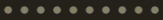

<ng-container *ngIf="dish">
  <div class="title">
    <app-title-banner [title]="'Customize'"></app-title-banner>
  </div>
  
  <div class="container-fluid">
    <div class="divSideDish">
      <div class="row">
          <!-- Ingredientes -->
          <div class="col-md-9 col-sm-12">
            <div class="divDishes">
              <div class="sideDishes">
                <p class="titleDish">{{ dish.name }}</p>
                <p class="priceDish">{{ dish.price | currency: "USD"}}</p>
              </div>
              <hr>
              <div class="titleBanner titleMin">
                  <app-title-banner [title]="'Side Dish'"></app-title-banner>
              </div>
              <div class="dishes">
                <div class="row text-center">
  
                  <!-- Si no se han cargado los platos -->
                  <div *ngIf="!loaded" class="text-center loadingDiv"> 
                    <h4 class="display-4">LOADING</h4>
                    
                  </div>
  
                  <!-- Mostrar todos los SideDish  -->
                  <ng-container *ngIf="loaded">
                    <ng-container *ngFor="let sideDish of sideDishes">
                      <div class="col-xl-3 col-lg-4 col-sm-6">
                        <app-side-dish-card [sideDish]="sideDish" [cantSideDishSelected]="cantSideDishSelected" (changeCant)="onChangeCant($event)"></app-side-dish-card>
                      </div>
                    </ng-container>
                  </ng-container>
  
                </div>
              </div>
            </div>
          </div>
          <!-- Vista del plato -->
          <div class="col-md-3 col-sm-12">
              <app-sticky-dish-view [dish]="dish"></app-sticky-dish-view>
          </div>
        </div>
    </div>
  </div>      
</ng-container>

<!-- Modal que se abre con las instrucciones para editar un plato -->
<ng-template #modal>
  <div class="modal-header">
    <h4 class="modal-title pull-left">Instructions to Edit</h4>
    <button type="button" class="close pull-right" aria-label="Close" (click)="modalRef.hide()">
      <span aria-hidden="true">&times;</span>
    </button>
  </div>
  <div class="modal-body">
    <ul>
      <li><span class="iconList">»</span> You can select <span class="font-weight-bold font-italic">maximum</span> two different and <span class="font-weight-bold font-italic">minimum</span> one Side-Dishes.</li>
      <li><span class="iconList">»</span> If you select only one Side-Dish, this will be of a <span class="font-weight-bold font-italic">greater proportion</span> than if you select two Side-Dishes.</li>
      <li><span class="iconList">»</span> If you select two Side-Dishes, they will be distributed in two <span class="font-weight-bold font-italic">equal</span> parts.</li>
    </ul>
  </div>
  <div class="modal-footer text-center">
    <button type="button" class="btn btn-medium btn-gray btn-block" (click)="bsModalRef.hide()">I got it!</button>
  </div>
</ng-template>